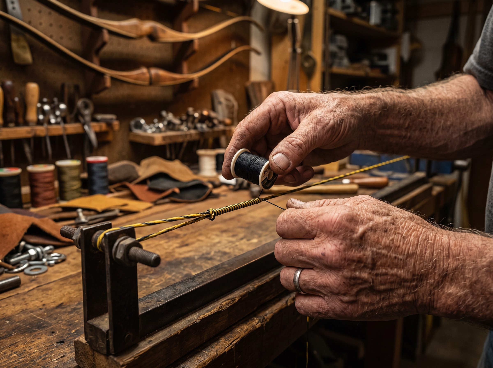
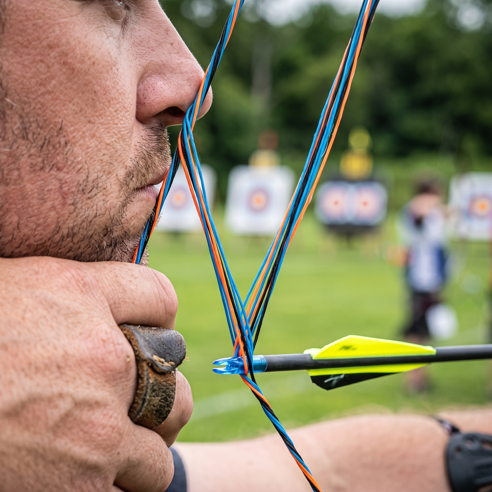
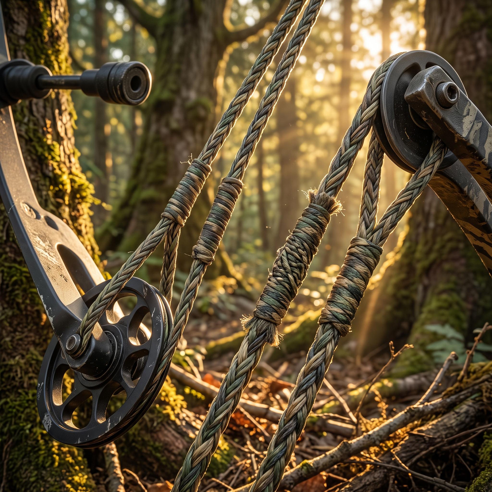
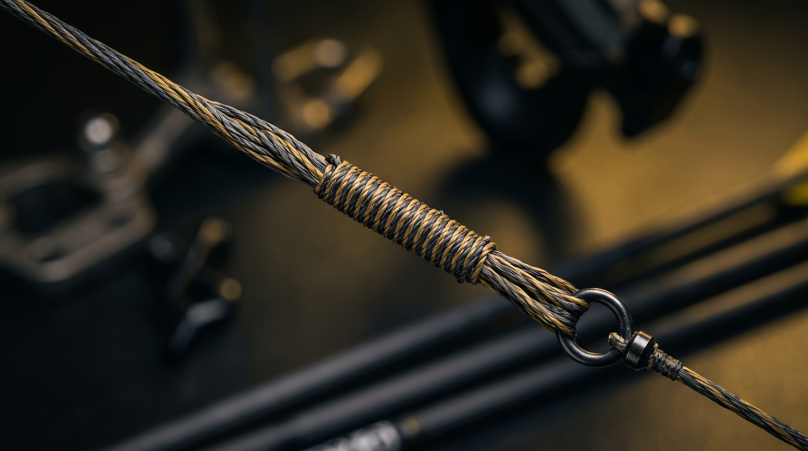

Cuerdas a medida para arcos tradicionales, olímpicos, compuestos y ballestas. Elaboradas hilo a hilo por experto artesano para tiro deportivo, recreativo y caza.
Elegí material, combinación de colores, entorchados (servinados) y la medida exacta según la especificación de tu arco.
Años de experiencia en la fabricación técnica garantizan una cuerda equilibrada, sin elongación indeseada ni estiramiento posterior.
Despachamos desde Mendoza a cualquier provincia de Argentina mediante expreso o transporte a convenir.

En nuestro taller ubicado en Chacras de Coria, Luján de Cuyo, Mendoza, cada cuerda se elabora de manera artesanal sobre banco de trabajo calibrado, cuidando la tensión uniforme de cada hilo y el entorchado meticuloso de los ojales.
Sumamos décadas de experiencia en arquería, caza y confección manual para ofrecerte repuestos de calidad superior que maximizan la velocidad, constancia y agrupamiento de tus disparos.
Elegí el modelo que mejor se adapte a tu modalidad o hacé clic en "Ver especificaciones" para conocer los detalles técnicos.

Diseñada para tiro con arco deportivo de alta competición. Mínimo estiramiento y gran estabilidad.

Juegos de cuerda y cables para arcos compuesto de alto libraje. Silenciosas y resistentes al roce.

Cuerdas reforzadas para arcos de madera, rasero, Longbow y la tremenda potencia de ballestas.
Trabajamos exclusivamente con fibras e hilos de reputación mundial para garantizar la máxima eficiencia en cada tiro.
Las fibras más utilizadas por campeones mundiales y cazadores exigentes. Excelente estabilidad de tensión y variados colores vibrantes.
El estándar dorado en bajo peso y rápida respuesta. Minimiza la oscilación de la cuerda al momento de soltar.
La fibra clásica para arcos tradicionales y recurvos de madera. Absorbe el impacto protegiendo la integridad estructural de las palas.
Hilos entorchados especiales de polietileno de ultra alto peso molecular (UHMWPE) que resisten la abrasión del disparador o separador de cables.
Completá los datos técnicos de tu equipo. Nos pondremos en contacto directamente vía WhatsApp con Piero para confirmar detalles, colores y coordinar la confección.
Resolvemos tus dudas sobre la confección artesanal, materiales, envíos y mantenimiento de cuerdas para arquería en Argentina.
La elección del material depende exclusivamente del tipo de arco y sus palas. Para arcos tradicionales de madera sin refuerzo en los tips, se recomienda Dacron B50 o B55 por su flexibilidad, que evita que la pala sufra impactos secos. Para arcos olímpicos de competición, arcos recurvos modernos con tips reforzados y arcos compuestos, utilizamos materiales sintéticos de alto rendimiento como BCY 8190, Fast Flight Plus, BCY 452X o DynaFLIGHT 97. Estas fibras avanzadas ofrecen estiramiento prácticamente nulo, aumentando la velocidad de salida de la flecha y manteniendo la puesta a punto intacta por más tiempo.
La medida de la cuerda suele expresarse en longitud real en pulgadas o en estándar AMO (Archery Trade Association). Generalmente, en un arco recurvo la cuerda mide unas 3 a 4 pulgadas menos que el largo AMO marcado en la pala del arco. Si tenés dudas sobre cómo medir la cuerda vieja o si tu arco perdió las especificaciones del fabricante, podés escribirnos directamente. En nuestro taller artesanal en Chacras de Coria, Mendoza, te guiamos paso a paso para medirla o podemos diseñar la cuerda a medida según la tensión y brace height (distancia de fístola) deseado.
Sí, realizamos envíos de cuerdas de arco artesanales a todas las provincias y localidades de Argentina (Buenos Aires, Córdoba, Santa Fe, Patagonia, NOA, etc.). Despachamos desde Mendoza mediante el servicio de expreso, transporte de encomiendas o correo a convenir con el cliente. Cada cuerda viaja en empaque individual de protección contra la humedad y deformación, lista para ser instalada en tu equipo penas la recibas.
Al ser un trabajo 100% personalizado y artesanal, el proceso de confección suele demorar entre 24 y 72 horas hábiles desde que se definen los materiales, colores y medidas. Cuidamos cada detalle del estiramiento previo en banco calibrado y entorchado (serving) para que la cuerda no se mueva ni gire al colocar el peep sight o nock. Si necesitás una cuerda de urgencia para un torneo o cacería, consultanos la disponibilidad de despacho rápido.
Absolutamente. Al ser fabricadas directamente por nuestro experto artesano Piero en Mendoza, cada cuerda cuenta con garantía directa de taller ante cualquier defecto de confección o fallas en el entorchado. Contás con atención personalizada pre y post venta para asesorarte sobre cera para cuerdas, colocación de silenciadores y ajuste de fístola.